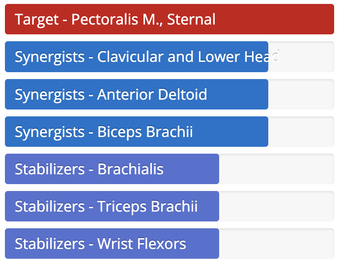
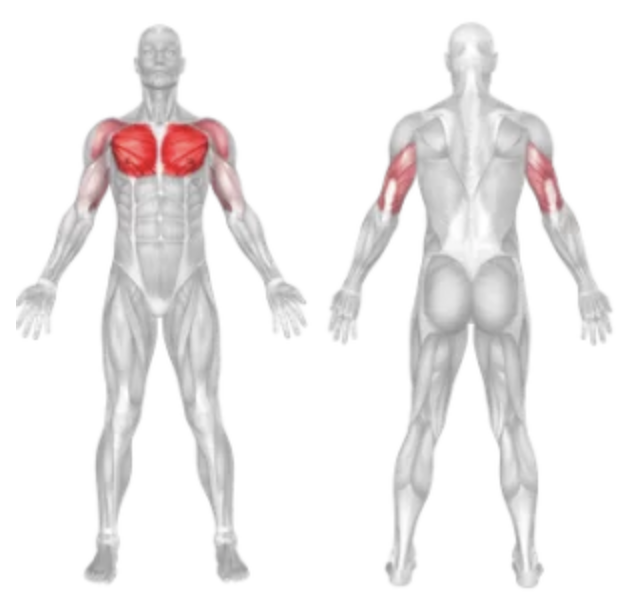

Setup
- Stand in the center of a cable crossover machine with pulleys set above head height.
- Select the desired weight on each stack.
- Grab each handle with a neutral grip (palms facing down) and take a step forward, keeping one foot in front for stability.
- Slightly bend your elbows and extend your arms out to the sides to feel a stretch in your chest.
- Keep your chest up, core tight, and a slight forward lean in your torso.
Execution
- Bring Hands Together Exhale and slowly bring the handles together in front of your chest in a wide arc motion, keeping your elbows slightly bent.
- Contract at the Center Squeeze your chest muscles when your hands meet in front of your body.
- Return with Control Inhale and slowly return the handles to the starting position, feeling the stretch across your chest.
- Repeat for the desired number of repetitions.
Tips for Effectiveness
- Maintain Form Don’t lock your elbows; keep a slight bend to protect your joints and maximize chest engagement.
- Focus on the Chest Don’t push with your arms — lead the movement with your chest muscles.
- Cross Slightly For extra contraction, allow the handles to cross slightly in front of your body at the bottom.
- Use Light to Moderate Weight Maintain full control throughout the movement; avoid swinging or jerking.
Benefits of Chest Cable Crossovers
- Chest Isolation Great for isolating and fully stretching/contracting the pectoral muscles.
- Constant Tension Cables keep tension on the chest muscles throughout the entire range of motion.
- Balanced Development Helps target inner chest and improves symmetry.
- Joint-Friendly Smooth motion reduces strain on shoulders compared to some free-weight chest exercises.
Muscles Worked in Chest Cable Crossovers

